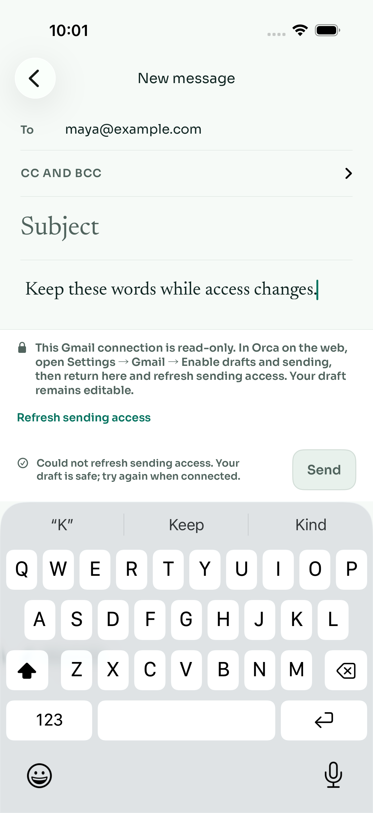
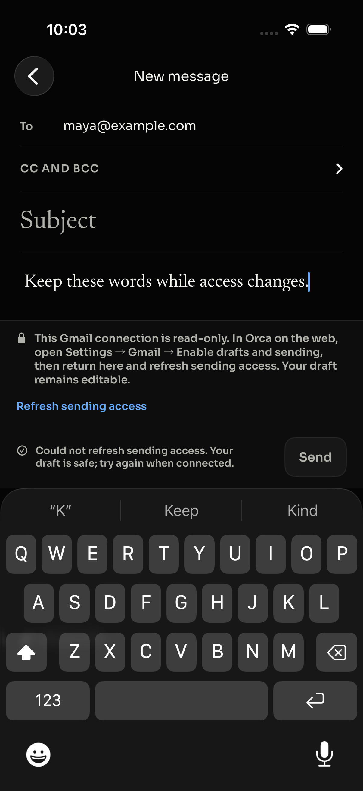
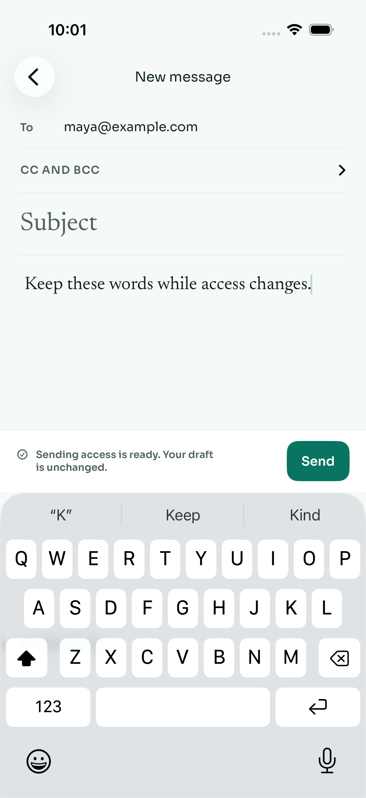
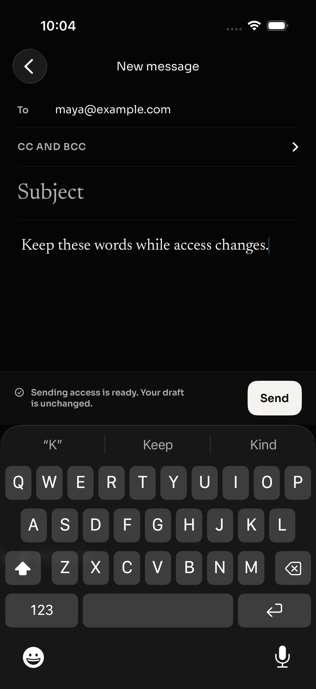
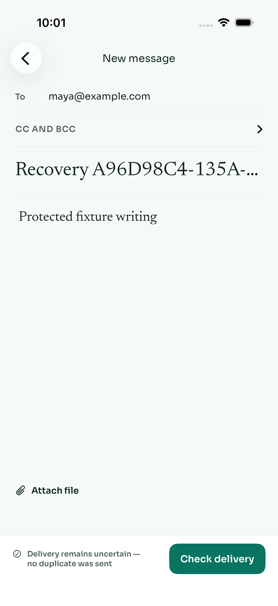
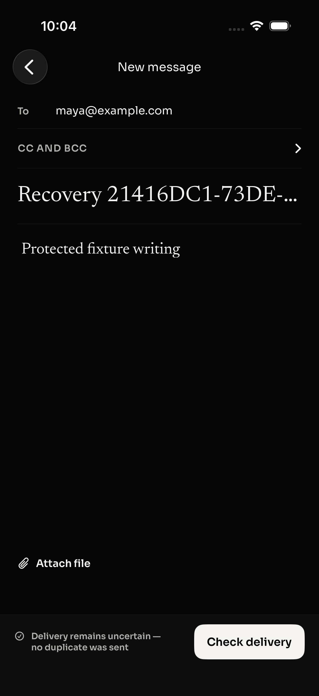
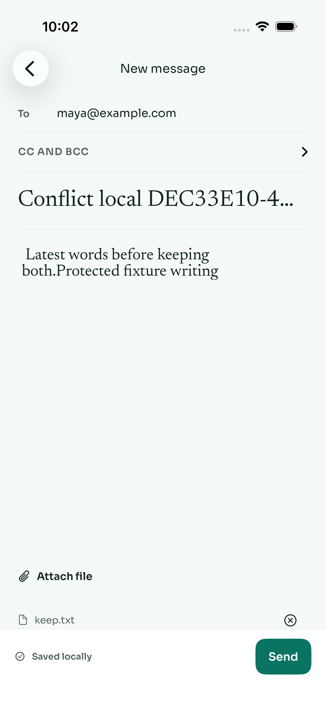
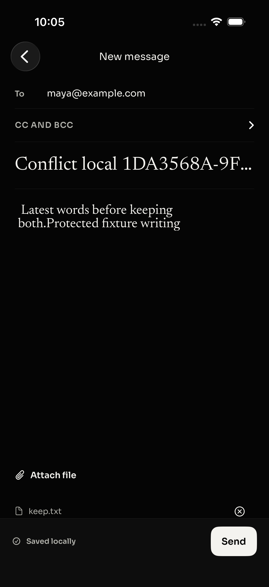

Verified on Luke’s Mac on October 1, 2026 with Xcode 26.4.1 (17E202), iPhone 17 Pro simulator, iOS 26.4.1, arm64. The isolated worktree started at published PR head 667faf6831a03e3b7d5634bf8799e593a2541a67, tree e78f6b718fd33dc0ce5b14a586658db64089b9a8. The final run includes the native accessibility/test-runner fixes in this revision.
| Check | Result |
|---|---|
| Debug simulator app + unit/UI test targets | Build passed |
| Unsigned Release app, iPhone SDK | Build passed; no archive or upload |
| Native unit tests | 49 passed, 0 failed, including all nine added regressions |
| Light compose UI | 6 passed, 0 failed |
| Dark compose UI | 6 passed, 0 failed |
| Temporary fixture delivery ledger | 6 send requests, 6 simulated deliveries |
| Independent final native/follow-up review | No concrete defect identified |
The runner attempted appearance changes on a shutdown simulator; it now boots and waits for the selected device; the exact command was verified from Shutdown and completed in 10 seconds. The status label was visibly correct but had no single semantic accessibility element; it now exposes the current status explicitly. The new conflict test dismisses Apple’s slide-to-type introduction when it appears. Original Light failures and a connection/fixture interruption are retained in local logs and are not counted as passes. A fresh-fixture final run completed successfully in both actual simulator appearances.
bun install --frozen-lockfile bun apps/api/scripts/mobile-fixture.ts ORCA_UI_TEST_SCOPE=compose zsh apps/ios/OrcaUITests/run-fixture-tests.sh /path/printed/connection.json SIMULATOR_UDID
Machine-readable environment, counts, limits, and log hashes: native results. Full NativeLight.xcresult, NativeDark.xcresult, logs, and all exported screenshots are retained in the delegated Mac task’s evidence directory.







